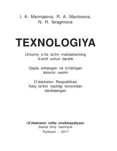

T44-sinf o'quvchilari uchun turli buyumlar yasash texnologiyasini o'rgatuvchi darslik.
Mazkur darslik umumiy o'rta ta'lim maktablarining 4-sinf o'quvchilari uchun mo'ljallangan bo'lib, turli xil materiallardan buyumlar, o'yinchoqlar va modellar yasash texnologiyasini o'rgatadi. Kitobda buyum yasash jarayonining bosqichlari, kerakli materiallar va amaliy topshiriqlar batafsil yoritilgan.